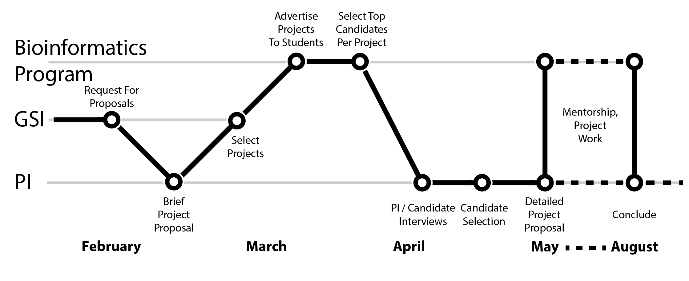
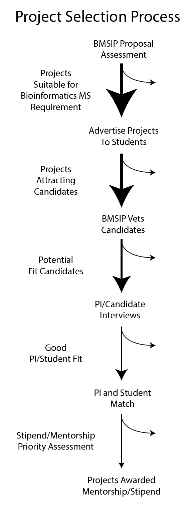

    <!-- container -->
    <section class="container">
        <div class="row">
            <!-- main content -->

            <section class="col-sm-8 maincontent centered">

                <br/>

                
                <p>
                    BMSIP connects basic, translational, and biomedical investigators who have bioinformatics needs with
                    Bioinformatics MS students who need to perform internships to complete their degrees.
                </p>
                <p>
                    Investigators may submit proposals describing a discrete project idea that involves bioinformatics.
                    <span style="font-weight: bold;">A limited number of projects are selected for full support by the
                        Bioinformatics Program and BMSIP bioinformatics scientists.</span>
                </p>

                <p>
                    Suitable projects must meet the Bioinformatics MS program internship requirement: they are entirely
                    computational, involve biological data analysis techniques covered by the Bioinformatics Master's
                    curriculum, and last at least 400 hours total.
                </p>
                <p>
                    All projects that are suitable bioinformatics internship projects are advertised to the
                    Bioinformatics MS students, and top candidates are connected with investigators for interviewing.
                </p>
                <p>
                    A subset of 6 to 10 projects selected by BMSIP scientists and staff are offered full intern stipend
                    support and bioinformatics mentorship. Projects submitted by investigators with little or no prior
                    experience or capabilities in genomics and high throughput biological data are prioritized for
                    support.
                </p>


            </section>
            <!-- /main -->

            <!-- Sidebar -->
            <aside class="col-sm-4 sidebar sidebar-right">

                <div class="panel">

                    
                </div>

            </aside>
            <!-- /Sidebar -->

        </div>
    </section>
